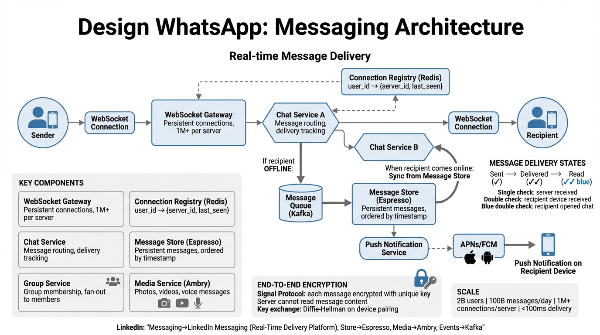

A deep dive into real-time messaging at massive scale — WebSocket connections, message delivery guarantees, end-to-end encryption, group chat fan-out, and media handling.
WhatsApp is a real-time messaging platform that connects over 2 billion users across the globe. The system must deliver text, media, voice, and video messages with sub-100ms latency while maintaining end-to-end encryption and exactly-once delivery semantics.
| Dimension | Target |
|---|---|
| Latency | < 100ms end-to-end for online users |
| Availability | 99.99% (< 52 min downtime/year) |
| Durability | Zero message loss — at-least-once with dedup |
| Ordering | Per-sender FIFO within a conversation |
| Security | E2E encryption; server stores only ciphertext |
| Scalability | Horizontal scaling to billions of concurrent connections |
| Component | Responsibility | Key Characteristics |
|---|---|---|
| WebSocket Gateway | Maintains persistent connections with clients | 1M+ connections/server, TLS termination, heartbeat management |
| Connection Registry | Maps user IDs to their active gateway server | Distributed hash map, sub-ms lookups, TTL-based expiry |
| Chat Service | Message routing, delivery orchestration, receipt tracking | Stateless, horizontally scalable, idempotent processing |
| Message Store | Persistent storage for offline messages and chat history | Write-optimized, per-user partitioning, TTL for delivered messages |
| Group Service | Group membership, fan-out coordination, metadata management | Membership cache, large-group queued fan-out |
| Media Service | Upload, compress, encrypt, and serve media files | Blob storage, CDN distribution, thumbnail generation |

sent ✓ acknowledgment.delivered ✓✓ ack back through the same path.delivered ✓✓ tick to the sender.sent ✓.delivered ✓✓ flows back to sender.| State | Visual | Meaning | Trigger |
|---|---|---|---|
| Sent | ✓ | Message reached the server and is persisted | Chat Service writes to Message Store and acks to sender |
| Delivered | ✓✓ | Message delivered to recipient's device | Recipient's client sends delivery ack to Chat Service |
| Read | ✓✓ | Recipient opened the conversation | Recipient's client sends read receipt (if enabled) |
Sender ──WebSocket──▶ Gateway A ──▶ Chat Service ──▶ Connection Registry
│ │
(persist msg) (lookup user)
│ │
▼ ▼
Message Store Gateway B found
│ │
sent ✓ ack push to Gateway B
│ │
◀────────────────────┘
│
Gateway B ──WebSocket──▶ Recipient
│
delivered ✓✓ ack flows back
Every message carries a unique message_id (UUID v7 with embedded timestamp) for idempotent delivery. If a client receives a duplicate, it silently discards it. The Chat Service also deduplicates within a sliding window using a Bloom filter backed by a hash set.
message_id timestamp.message_id. Server streams all subsequent messages in order.| Guarantee | Mechanism |
|---|---|
| At-least-once delivery | Server retries until client acks; client deduplicates by message_id |
| Ordering per sender | Monotonic message_id with embedded timestamp; client sorts on receipt |
| No message loss | Write-ahead to durable store before acking sender; replication factor 3 |
| Exactly-once semantics | Idempotent writes + client-side dedup = effectively exactly-once |
When a user sends a message to a group of N members, the Chat Service must deliver the message to all N−1 other members. The fan-out strategy varies by group size:
Sender ──▶ Chat Service ──▶ Group Service (get member list)
│ │
│ ┌───────┴───────┐
│ ▼ ▼
│ Small Group Large Group
│ (in-memory) (enqueue to
│ │ fan-out queue)
│ ▼ ▼
│ For each member: Worker pool:
│ ├─ Registry lookup ├─ Batch of 50
│ ├─ Online → push ├─ Registry lookup
│ └─ Offline → queue └─ Deliver / queue
▼
sender gets sent ✓
Maintaining consistent message order across distributed servers is challenging. WhatsApp uses a combination of techniques:
| Technique | Purpose | Details |
|---|---|---|
| Lamport Timestamps | Logical ordering across servers | Each Chat Service node maintains a logical clock. On send, timestamp = max(local, received) + 1. Provides causal ordering without synchronized physical clocks. |
| Sender Sequence Number | Per-sender FIFO | Each client attaches a monotonically increasing sequence number per conversation. Receiver buffers and reorders if messages arrive out of sequence. |
| Server Timestamp | Tie-breaking | Chat Service stamps each message with a server-side NTP-synchronized timestamp for display ordering when logical timestamps are equal. |
L(A) < L(B).WhatsApp uses the Signal Protocol (formerly TextSecure Protocol) to provide end-to-end encryption for all messages. The server never has access to plaintext content or encryption keys.
The server stores and forwards only ciphertext. Even if the server is compromised, message content remains confidential. Encryption and decryption happen exclusively on client devices. The server facilitates key exchange but never sees the shared secret.
| Primitive | Usage | Algorithm |
|---|---|---|
| Identity Key | Long-term device identity | Curve25519 key pair |
| Signed Pre-Key | Medium-term key, signed by identity key | Curve25519 + Ed25519 signature |
| One-Time Pre-Keys | Single-use keys for initial key exchange | Curve25519 (batch of 100 uploaded) |
| Session Key | Symmetric encryption of messages | AES-256-CBC + HMAC-SHA256 |
| Message Key | Per-message unique key (derived from chain key) | HKDF (HMAC-based Key Derivation) |
S.S is fed into HKDF to produce the initial Root Key and Chain Key.After the initial key exchange, the Double Ratchet provides forward secrecy and break-in recovery:
CK_new = HMAC(CK, 0x02). The Message Key is derived: MK = HMAC(CK, 0x01). Old Chain Keys are deleted.Groups use the Sender Keys variant of the Signal Protocol:
WhatsApp's architecture maps to several LinkedIn infrastructure components:
| WhatsApp Component | LinkedIn Equivalent | Notes |
|---|---|---|
| WebSocket Gateway + Chat Service | Real-Time Delivery Platform | LinkedIn's real-time messaging infrastructure handles presence, typing indicators, and message delivery over persistent connections |
| Message Store (persistent, partitioned) | Espresso | LinkedIn's NoSQL document store, horizontally partitioned by user ID, provides low-latency reads and writes for messaging data |
| Media Service (blob storage + CDN) | Ambry | LinkedIn's distributed blob storage for media objects (images, documents, videos) with replication and tiered storage |
| Fan-out queue, event streaming | Kafka | Invented at LinkedIn; used for message fan-out, event sourcing, async processing of delivery receipts and presence updates |
| Connection Registry (distributed cache) | Couchbase | Low-latency distributed key-value store mapping user IDs to active gateway servers; sub-ms lookups with automatic failover |
Q: How would you scale group messaging to support groups with 100,000+ members?
Q: What are the trade-offs of E2E encryption at scale?
Q: How do you guarantee message ordering in a distributed system?
(Lamport timestamp, server timestamp, sender sequence number) as a composite sort key for display ordering.| Topic | Key Points |
|---|---|
| Presence System | Heartbeats every 30s over WebSocket; last-seen stored in Connection Registry; subscribe to contacts' presence via pub-sub |
| Typing Indicators | Ephemeral signals sent over WebSocket; not persisted; throttled to 1 event/3s to reduce bandwidth |
| Media Upload | Client encrypts media → uploads to Media Service → gets a blob URL → sends URL + encryption key in the E2E-encrypted message |
| Rate Limiting | Per-user token bucket (30 msgs/min personal, 20 msgs/min groups); sliding window for spam detection on metadata patterns |
| Multi-Device | Each device is a separate Signal session; messages fanout to all linked devices; sync state via device-specific offline queues |
| Voice/Video Calls | SRTP for media transport; STUN/TURN for NAT traversal; SFU (Selective Forwarding Unit) for group calls; E2E encrypted |